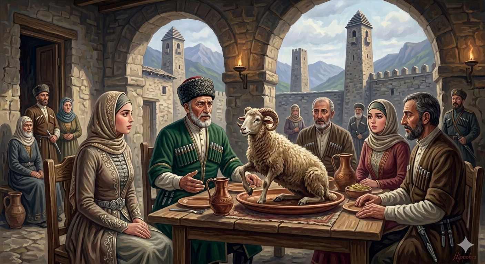

И.А. Дахкильгов. Хьехаме дувцарш - поучительные рассказы-притчи.
И.А. Дахкильгов. Хьехаме дувцарш - поучительные рассказы-притчи. Из ингушского фольклора.

Бакъдар чӀоагӀа да
Дуне тӀа са мел доаллача хӀаман мотт ховш хилар совнагӀа, Сулейма-пайхамар шайхал доаллаш а хиннав. Ший сесагаца цхьанахьа хьоашалгӀа ваха хиннав Сулейма-пайхамар. Фусам-дас хьаьшашта хьалха оттабаьб кыйчабаь бӀарчча устагӀа. Шун тӀа багӀача нахах цох саго кулг тохалехьа, Сулейма-пайхамара аьннад: - Укх шун тӀа багӀача наха шоай дег чу доаллар мадарра хьадувце, ер устагӀа дийнлургба. - ХьалхагӀа Ӏа ала хьа дага къайлагӀа доаллаш фуд, - аьннад сесаго. - Сол вӀаьхегӀа цхьаккха вац. ХӀаьта а маха биллал мара еце а сайна саго хӀама елча, хоза хет сона, - жоп деннад Сулейма-пайхамара. Цун сесаг дуккха къонагӀа хиннай. Аьннад цо: - Хьо мелла вӀаьхий хиларах, соца хьо мел дика хиларах, са дег чура цӀаккха а дӀадоалаш дац хьо сол дуккха дукхагӀа воккхагӀа волаш хилар. Шун тӀа илла устагӀа дийнбенна болабеннаб. Селлара чӀоагӀа низ болаш да бакъдар.
РУССКИЙ
Правда сильна
Пророк Сулейман не только знал языки всего сущего на земле, но также обладал даром волшебника. Сулейман, его жена и еще несколько человек сидели как-то в гостях. Хозяин дома приготовил барана и целиком поставил его на стол. Еще никто к барану не притронулся, и тут Сулейман сказал: - Если сидящие за столом поведают правдиво а своих затаенных мыслях, этот баран оживет. - Тогда ты начинай говорить первым, - предложила жена. - Я очень богат, и все же мне приятен тот человек, который хоть что-нибудь принесет. Жена пророка Сулеймана была намного моложе его. - Хотя ты и богат, хотя ты ко мне хорошо относишься, все равно меня никогда не покидает мысль, что ты намного моложе меня. Вдруг баран ожил. Вот насколько сильна правда.
ENGLISH
The truth is powerful
Not only did Prophet Solomon know the languages of all living things on earth, he also possessed the gift of a magician. One day, Solomon, his wife and a few others were sitting as guests. The host had prepared a ram and placed it whole on the table. No one had touched the ram yet when Solomon said, 'If those seated at the table speak truthfully of their hidden thoughts, this ram will come to life.' "Then you speak first," suggested his wife. "I am very rich, and yet I am pleased by anyone who brings even the smallest gift." The wife of the prophet Suleiman was much younger than him. "Although you are rich and treat me well, I still can't shake the feeling that you are much younger than me." Suddenly, the ram came to life. That is how powerful the truth is.
НОХЧИЙН
Бакъдерг чӀогӀа ду
Дуьне тӀе са мел доллучу хӀуманна мотт хууш хилар совнаха, Сулейма-пайхамар шайхал доллуш а хилла. Шен зудчуьнца цхьанхьа хьошалла вахан хилла Сулейма-пайхамар. ХӀусам-дас хьешашна хьалха хӀоттийна кечбина дийна уьстагӀ. Шунан тӀе бохкучу наха цунах куьг тохале, Сулейма-пайхамара аьлла: - ХӀокху шун тӀе бохкучу наха шай дега чу доллург ма-дарра схьадийцахь, хӀара уьстагӀ денлур бу. - Хьалха ахь ала хьан дагах къайлах доллуш хӀун ду, - аьлла зудчо. - Сол вехаш цхьа а вац. ХӀета а маха биллал бен йацахь а сайна стага хӀума йелча, хаза хета суна, - жоп делла Сулейма-пайхамара. Цуьнан зуда дуккха къоно хилла. Аьлла цо: - Хьо мелла вехаш хиларх, соьца хьо мел дика хиларх, сан дега чуьра цкъа а дӀадолуш дац хьо сол дуккха воккхах волуш хилар. Шун тӀе Ӏуьллу уьстагӀ денбелла болабелла. Сел чӀогӀа ницкъ болуш ду бакъдерг.
ПОГОВОРКИ